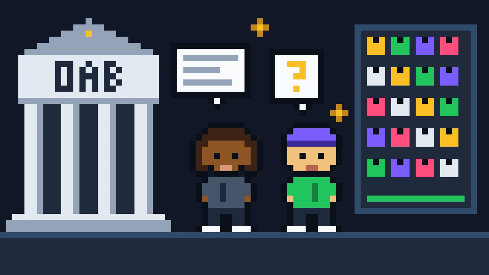
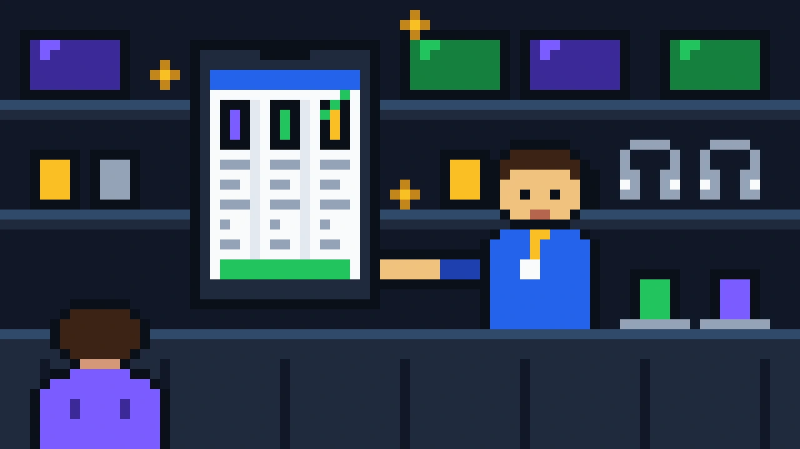
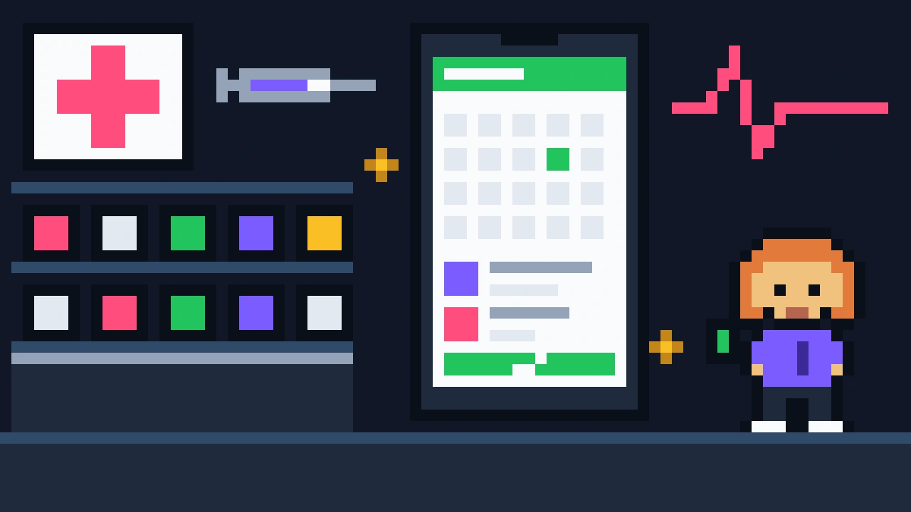

Product Discovery · 2025OAB Paraná
Digital transformation discovery: 36 interviews to map how lawyers and staff really work.
Product Designer creating digital experiences that connect people and solve real problems. This portfolio is a platformer: hit Play and walk down the page, or just scroll if you'd rather read.
I'm a digital product designer with 7+ years creating people-centered solutions aligned with business goals: research, prototyping, testing and usage metrics, from first concept to final delivery.
I was born and raised in Maranhão, one of Brazil's most unequal states. That shaped how I design: before proposing anything, I try to understand people's reality and cultural background.
I started as a graphic designer, moved into UI in 2019 at one of São Paulo's largest software houses, and went on to lead design on strategic projects for Carrefour, Vivo and Grupo DPSP.
Companies I've designed for

My job is to understand the depth of a challenge and make a digital solution viable, working with stakeholders and developers from discovery to handoff.
Companies, tech teams, stakeholders and users all belong in the equation.
A product only succeeds if it solves a real pain, at every step.
Errors are part of the work, and the base for improving the process.
It raises the quality of the work. It is not a shortcut that replaces it.
Six cases from discovery to shipped product. Jump on a pipe and press ↓ to open one.

Product Discovery · 2025Digital transformation discovery: 36 interviews to map how lawyers and staff really work.
 Discovery & Design · 2025
Discovery & Design · 2025Turning scattered spreadsheets into one platform for courses, rooms and resources.

UI / Product Design · 2023A price comparison feature for sales associates: 15,000+ comparisons in 3 months.

UI / Product Design · 2022A health services portal born in one sprint during the pandemic: 295,000+ services sold.
 AI Solution · 2026
AI Solution · 2026How I turned 11 interviews into AI agents that validate screens and journeys.
 UI / Product Design · 2026
UI / Product Design · 2026A network management CRM designed and built as an MVP in five days.
FIEMA, Advoprazo, Impactos Positivos, DiFérias, Platform Builders and more.
I usually reply fastest on LinkedIn. For something more formal, email works too. Land on the floor of this stage to finish the game.